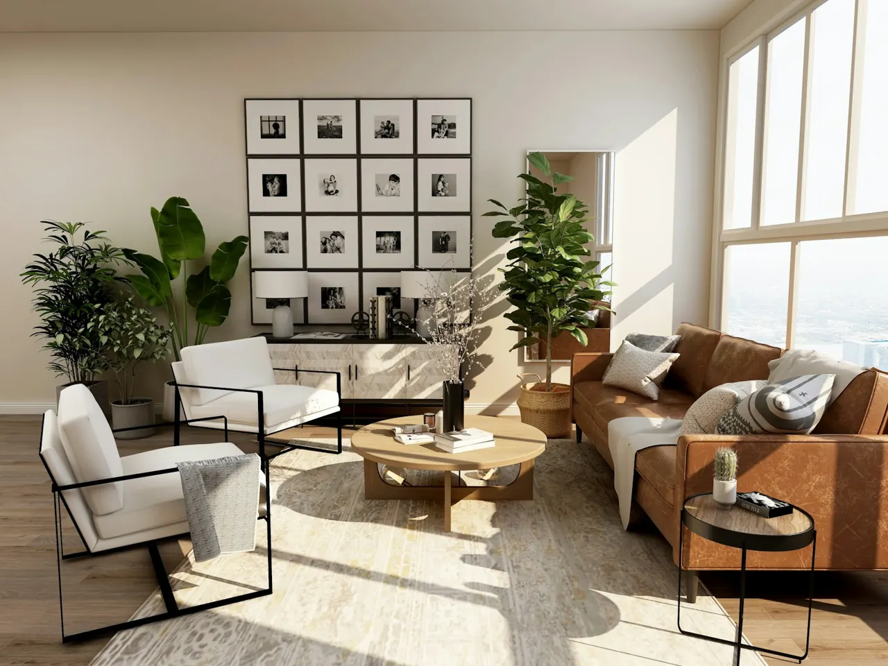
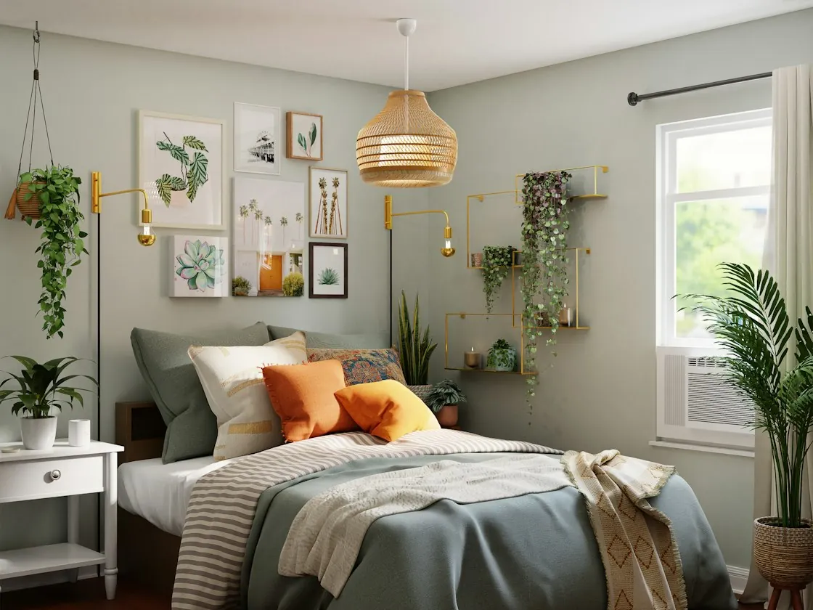

Өмірге ыңғайлы интерьер
Пәтерлер мен үйлердің дизайны. Алдымен жоспарлау бойынша кеңес алуға болады.

Асүй мен жатын бөлме

Асүй
Арал жұмыс аймағы мен таңғы ас ішетін орынды біріктіреді.


Жатын бөлме
Байсалды түстер, жылы тоқыма және жасыл өсімдіктер.
Жұмыс түрлері
Бастау үшін не дайындау керек
Пәтер жоспарын, шамамен ауданын және өзіңізге ұнайтын бірнеше интерьер үлгісін дайындаңыз.
Жоспарлау бойынша кеңес
Тұрмыс салтыңызды, міндеттер мен шектеулерді талқылаймыз. Кездесуден кейін жұмысты бастауға көмектесетін ұсыныстар аласыз.
Дизайн-жоба
Жоспар, материалдар, жарық, 3D-визуализациялар және жөндеуге арналған жұмыс сызбалары.
Жөндеуді сүйемелдеу
Мердігерлермен шешімдерді келісуге және материалдар болмаған кезде балама табуға көмектесеміз.